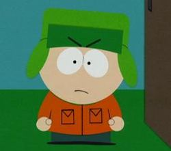

Kyle Gerald Broflovski a South Park című amerikai animációs sorozat egyik szereplője. Osztálytársaival és barátaival, Stan Marshsal, Eric Cartmannel, valamint Kenny McCormickkal együtt a sorozat központi alakja. Eredeti hangját Matt Stone kölcsönzi – aki némiképp mintául is szolgált a szereplő megalkotásához – állandó magyar hangja Dolmány Attila. A televízióban Kyle 1997. augusztus 13-án, a South Park első epizódjának sugárzásakor tűnt fel, de pár évvel korábban már szerepelt Trey Parker és Matt Stone The Spirit of Christmas című kétrészes rövidfilmjében, 1992-ben, illetve 1995-ben. Kyle általános iskolás negyedikes tanuló, aki szülővárosában, a coloradói South Parkban sűrűn él át tipikusnak nem mondható kalandokat. Legjobb barátjával, Stannel együtt a sorozat főhősének számít, az antihős Cartmannel szemben. Kyle arról ismert, hogy a sorozat kisszámú zsidó szereplői közé tartozik és rendszeresen kirekesztettnek érzi magát a többiek közül. A szereplő gyakran szatirikus módon bemutatott sorozatbeli helyzetét a zsidó származású nézők részéről egyszerre érik dicséretek és bírálatok. A szereplő alakját számítógépes programokkal alkották meg, felidézve a sorozatra jellemző, papírkivágásos figurák tulajdonságait. Kyle a sorozaton kívül az 1999-es South Park – Nagyobb, hosszabb és vágatlan című mozifilmben, valamint a sorozathoz köthető, kereskedelmi forgalomban kapható termékeken is látható. Noha Parker és Stone a kisgyerekekre jellemző tulajdonságokkal is felruházták, Kyle sorozatbéli nézetein keresztül olyan, inkább felnőtteknek szóló nézeteket és témákat is kifejtenek, amelyeket a politika, a vallás, a populáris kultúra és a filozófia szakértői publikációikban gyakran megemlítenek.
